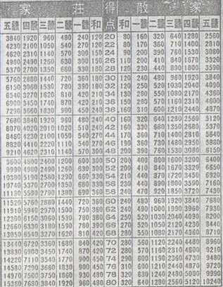

先般、麻雀メルマガを発行するＴ四郎さんより、面白いパンフレットを頂いた。見ると終戦直後の昭和２４年１２月、上海公司が発行したパンフレット。手牌７枚から手牌10枚までの聴牌形を図示したものだった。聞くところに寄れば、なにか昔の麻雀本の中にはさまっていたものだという。

※裏面も同じ様になっている。
聴牌形の分類と言っても、内容はちと不十分。たとえば、手牌７枚での筋待ち形は純面子型７種、複面子型５種あるが（詳しくはこちら）、このパンフレットには純面子型３種、複面子型２種の合計５種がランダムに記載されているのみである。
手牌７枚での分類くらいは手作業で分類可能である。じっさい戦前にはすでに純面子型７種、複面子型３種、合計10種は解明されていたと思われる。それが合計５種しか記載されていない。そこでこれまぁ、PR用か書籍の付録として印刷されたものと思われる。
しかし発行元の上海公司は、戦前の大手の麻雀牌製造販売会社で、麻雀史的に貴重な存在の会社である。麻雀黎明期に、この会社が果たした役割は非常に大きい。またこういうパンフレットのたぐいのモノは、長年の間に散逸してしまうことが多い。そういうテンで、当時の或る一面を示す貴重な資料といえるパンフレットある。
そこで最初は書談のカテゴリーへup しようかと思ったが、歴史のカテゴリーで紹介した次第。
|